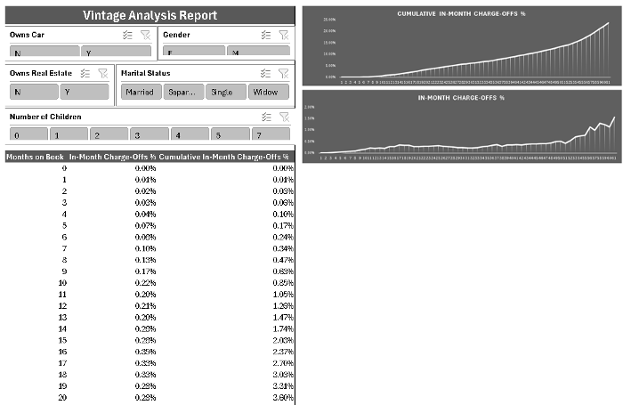
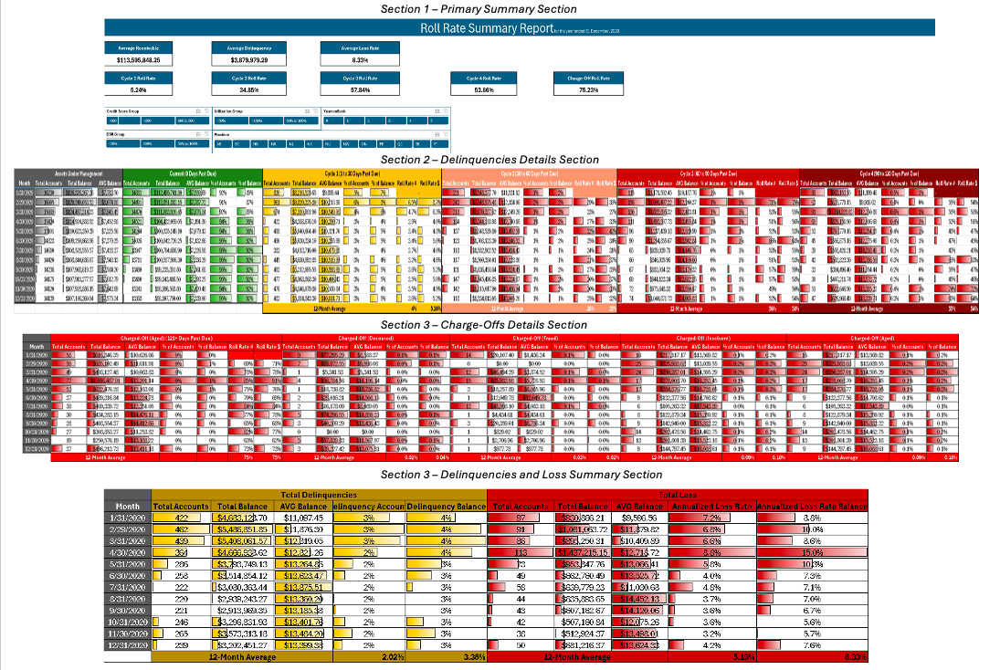
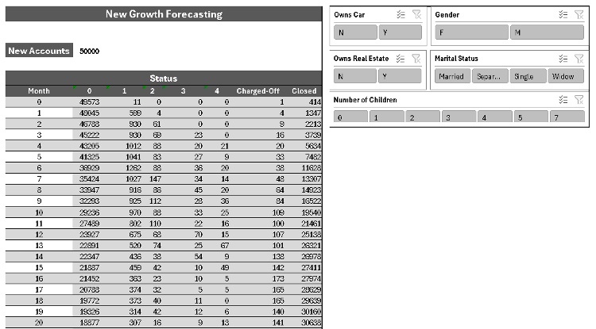
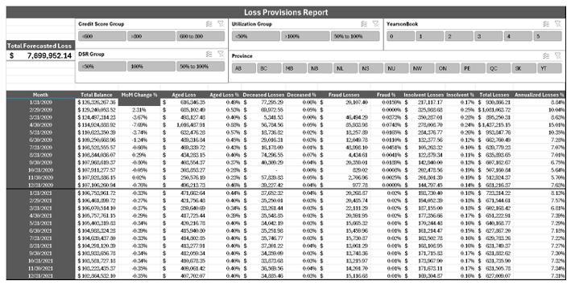

Credit Risk Analysis
Excel-based reports used for assessing credit risk and projecting future losses in a financial institution. The reports created include:
-
Vintage Analysis Report: Analyzes how accounts' statuses change over time based on the number of months they’ve been active. This helps in predicting future delinquencies and defaults.

Roll Rate Report: Tracks the migration of delinquent accounts through different stages, such as from Current to Delinquent or Charged-Off. This report is used to assess credit risk based on customer demographics and behavior.

Loss Provisioning Report: Projects future losses by analyzing historical data and applying forecasting techniques to estimate how many accounts will likely end up in default, and how much loss the company can expect.

New Growth Forecasting: Uses historical account performance to forecast the number of new accounts that will likely be charged-off in the future. This report helps in projecting the performance of new loans or accounts under similar demographic conditions.

Tools Used:
- Excel
- Power Query Editor
- Power Pivot
Datasets Used
- Company 1 – Application Record.xlsx
- Company 1 – Credit Record.xlsx
- Company 2 – Application Record.xlsx
- Company 2 – Credit Record.xlsx
Objective
The goal of these reports is to assist credit risk and strategy teams in forecasting future losses and understanding the risks associated with delinquent accounts, segmented by different demographic and financial characteristics. These reports will also guide marketing teams in projecting the success of future campaigns.
Key Features:
- Slicers for dynamic filtering of results by demographics (e.g., credit score, debt service ratio, and geography).
- Forecasting of future losses and provisions based on historical data.
- Detailed Roll Rate analysis to track account performance over time.
- Vintage Analysis to identify trends in account defaults.
Results
These reports provide actionable insights for credit risk management, helping predict future losses with a high degree of accuracy.